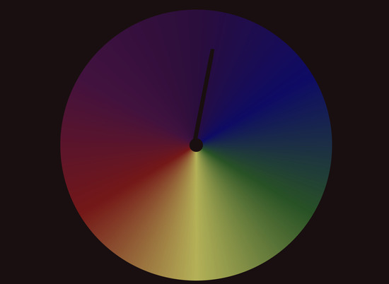

Lee Tusman
↩ Everyday
<
>
Title: Season
Year: 2018
Medium: Website, Seasons
Descrip: The Season clock is an implementation of Scott Thrift's project The Present, a clock that rotates once a year, beginning on the winter solstice. The colors indicate the season. Green for the spring harvest. When the hand reaches the golden bottom it is at the summer equinox. Red represents the fall, perhaps fire or falling leaves. Violet/blue for the winter. Thrift's project reminds us to slow down and experience time in the moment by displaying our movement through the seasons. I check this periodically throughout the year and find it calming.
Url: season/↪

 ©opyleft
©opyleft